エントランスでガード
こんにちは 富山県で自然素材にこだわった家づくりをしている 「フジ創アイノス」です。 住まい防犯、セキュリティについて。 ・ここで、泥棒を侵入前にエントランスでガード対策。 １，戸建編 1-1 庭・外構 ・垣根や塀の外か
続きを読む →FUJISOU AINOS JOURNAL
家づくりのこと、暮らしのこと。
日々の想いを、お伝えします。
社長ブログ 283件 ／ 新しい記事から 10・12ページ
こんにちは 富山県で自然素材にこだわった家づくりをしている 「フジ創アイノス」です。 住まい防犯、セキュリティについて。 ・ここで、泥棒を侵入前にエントランスでガード対策。 １，戸建編 1-1 庭・外構 ・垣根や塀の外か
続きを読む →こんにちは。 富山県で自然素材にこだわった家づくりをしている 「フジ創アイノス」です。 いつもありがとうございます。 今からの季節、、 ほんとに寒い季節です。 今日は、 冬も暖かくなる工夫を教えたいと思います。 １，冬の
続きを読む →こんにちは。 富山県で自然素材にこだわった家づくりをしている 「フジ創アイノス」です。 いつもありがとうございます。 今日は、審査のことについて説明いたします。 入居審査❔期間❔ 「入居審査」とは、入居希望者が賃貸マンシ
続きを読む →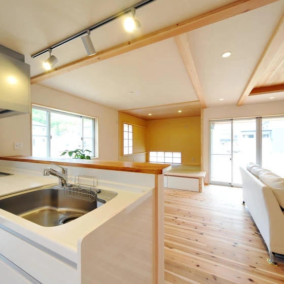
こんにちは。 富山県で自然素材にこだわった家づくりをしている 「フジ創アイノス」です。 今日は、バリアフリー住宅について少し解説します。 バリアフリーは家庭で大事です。 バリアフリーが知りたい人、必見！ 内見のチェックポ
続きを読む →こんにちは 富山県で自然素材にこだわった家づくりをしている 「フジ創アイノス」です。 いつもありがとうございます☆ 今日は、スケルトン❔リフォーム❔について。 費用とお伝えいたします。 １，スケルトンリフォームとリノベー
続きを読む →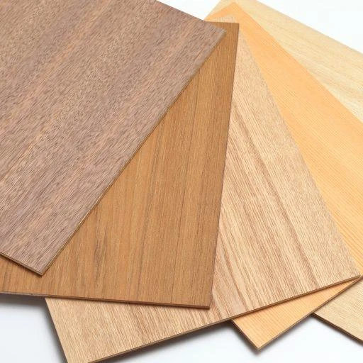
こんにちは 富山県で自然素材にこだわった家づくりをしている 「フジ創アイノス」です いつもありがとうございます。 今日は、素敵な、、、を紹介します。 １ ，天然木で素敵なリノベーション。 ・天然木のメリット １，風合い。
続きを読む →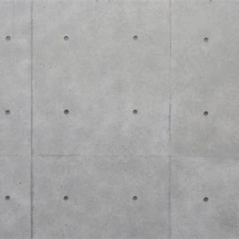
こんにちは 富山県で自然素材にこだわった家づくりをしている 「フジ創アイノス」です いつもありがとうございます。 今回は、スタイリッシュというのを紹介します。 ☆スタイリッシュのコンクリートの壁☆ １，広さの確保 ・一般
続きを読む →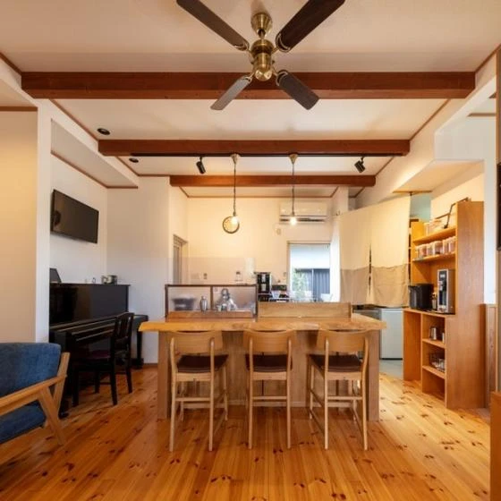
こんにちは 富山県で自然素材にこだわった家づくりをしている 「フジ創アイノス」です 素敵な家を建てたら、長持ちさせたいですよね❔ 今日は長持ちせるポイントを紹介いたします。 有効な３つのポイントと４つの具体例を紹介します
続きを読む →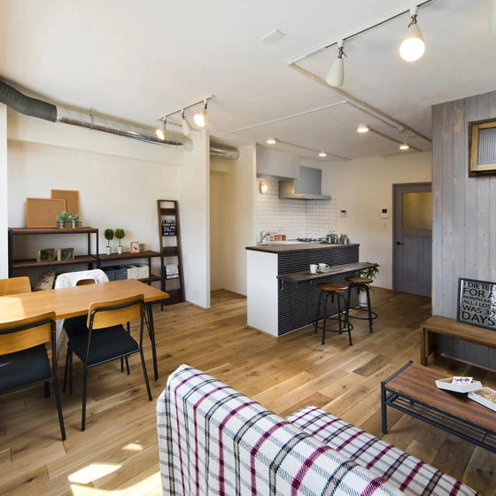
こんにちは 富山県で自然素材にこだわった家づくりをしている 「フジ創アイノス」です いつもありがとうございます。 ☆中古戸建インスペクション必ずやるべき３つ☆ １，リノベーション費用をコントロールしやすい。 ２，建物倒壊
続きを読む →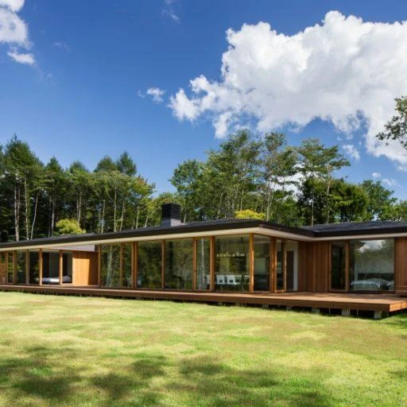
こんにちは 富山県で自然素材にこだわった家づくりをしている 「フジ創アイノス」です。 いつもありがとうございます。 いつもと違う話をします。 中古について。。 中古マンション、中古戸建てについて。。 中古リノベーション。
続きを読む →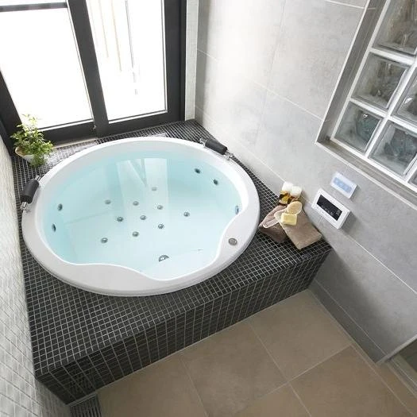
こんにちは 富山県で自然素材にこだわった家づくりをしている 「フジ創アイノス」です。 いつもありがとうございます。 洗面台だけではなく、浴室もおしゃれにしたいですね。 １、 おしゃれな浴室、お風呂を作る。 ①、理想の完成
続きを読む →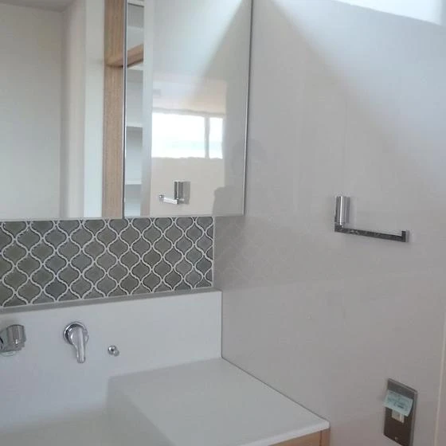
こんにちは 富山県で自然素材にこだわった家づくりをしている 「フジ創アイノス」です。 家庭で必要な洗面台について。 １，洗面台のタイルの種類 。 ・モザイクタイル、サブウェイスタイル、大判タイルの３つ。 ①、モザイクタイ
続きを読む →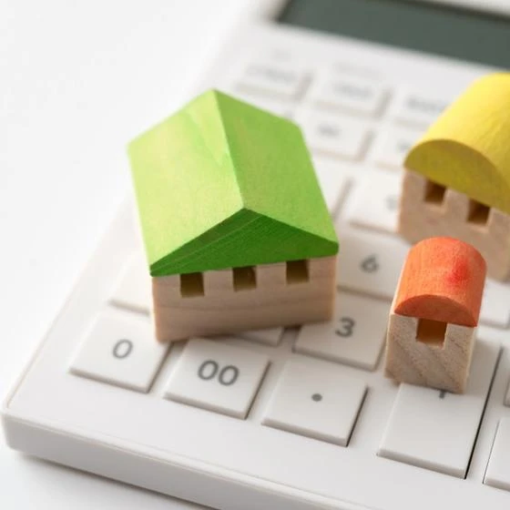
こんにちは 富山県で自然素材にこだわった家づくりをしている 「フジ創アイノス」です。 いつもご覧いただきありがとうございます。 そして気になるのは、費用に関すること。 費用はかなり重要です。 。 リノベーション費用を抑え
続きを読む →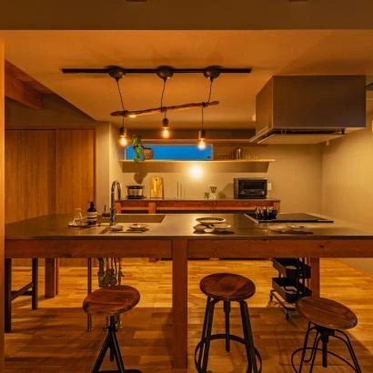
こんにちは 富山県で自然素材にこだわった家づくりをしている 「フジ創アイノス」です。 対面式キッチンとは❔ ダイニング・リビング向きのキッチンのこと。 開放感がありおしゃれに見えるキッチンスタイル。 コミュニケーションを
続きを読む →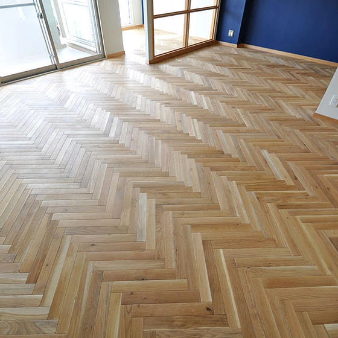
こんにちは 富山県で自然素材にこだわった家づくりをしている 「フジ創アイノス」です。 魅力的な、床を紹介します。 それは、 ヘリンボーン床。 という。 １，ヘリンボーン床人気の秘密。 ・ダイナミックで芸術的。 ・色との相
続きを読む →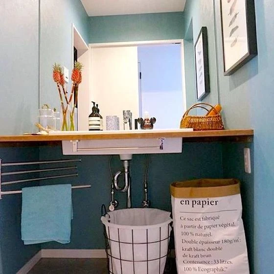
こんにちは 富山県で自然素材にこだわった家づくりをしている 「フジ創アイノス」です。 壁面収納を作る特徴 ２つあります。 ・デッドスペースを活かすことができる。 ・洗面台スペースが狭くても収納確保できる。 「オススメな人
続きを読む →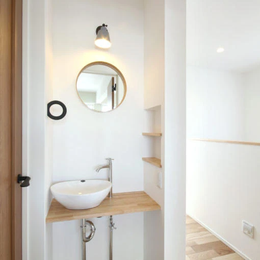
こんにちは 富山県で自然素材にこだわった家づくりをしている 「フジ創アイノス」です。 洗面台本体を交換するのはオススメ出来ません。 その理由は、、、２つあります。 ・ 洗面台を交換するDIYを行うためには資格が必要。 ・
続きを読む →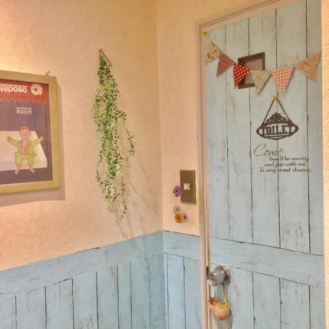
こんにちは 富山県で自然素材にこだわった家づくりをしている 「フジ創アイノス」です。 ① リメイクシート 方法１ 洗面台にリメイクシートをはる。 特徴 ・貼りやすい。 ・壁や棚、床など場所を問わずに貼れる。 リメイクシー
続きを読む →こんにちは 富山県で自然素材にこだわった家づくりをしている 「フジ創アイノス」です。 流行っているDIYについて。。 洗面台を工夫する 洗面台DIYする方法。 ・家にある洗面台を手軽にオシャレにDIY ・洗面台本体を交換
続きを読む →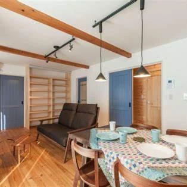
こんにちは 富山県で自然素材にこだわった家づくりをしている 「フジ創アイノス」です。 どっちがオススメ❔ というお題。 ローコスト住宅と中古住宅のリノベーションはどっちがオススメ❔ マイホームのリノベーションはどっちがい
続きを読む →
こんにちは。 富山県で自然素材にこだわった家づくりをしている 「フジ創アイノス」と申します。 呼吸する壁「漆喰」 漆喰とは、、 ・石炭石を加工して、作られる消石灰〈水酸化カルシウム〉に、砂、海藻のり、すさ等を混ぜ、水で練
続きを読む →
こんにちは 富山県で自然素材にこだわった家づくりをしている 「フジ創アイノス」です。 ローコスト住宅を検討中の方、必見。 「中古住宅のリノベーション」選択肢。 費用を抑えてマイホームを手に入れることが目的であるなら、中古
続きを読む →
こんにちは。 富山県で自然素材にこだわった家づくりをしている 「フジ創アイノス」と申します。 ① 漆喰のメリット １，調湿効果 多孔質な素材のため、湿度を調整して一年中快適な生活を送ることができます。 ２，消臭効果 調湿
続きを読む →
こんにちは。 富山県で自然素材にこだわった家づくりをしている 「フジ創アイノス」と申します。 外装選びポイントについて。 家のデザインを決めるもの。 住宅のエンベロープ[外皮] 住宅などの建築物を、 スケルトンとマシンと
続きを読む →